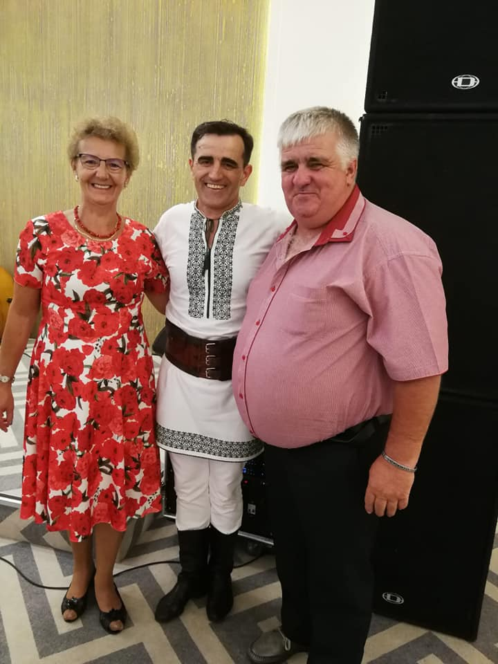
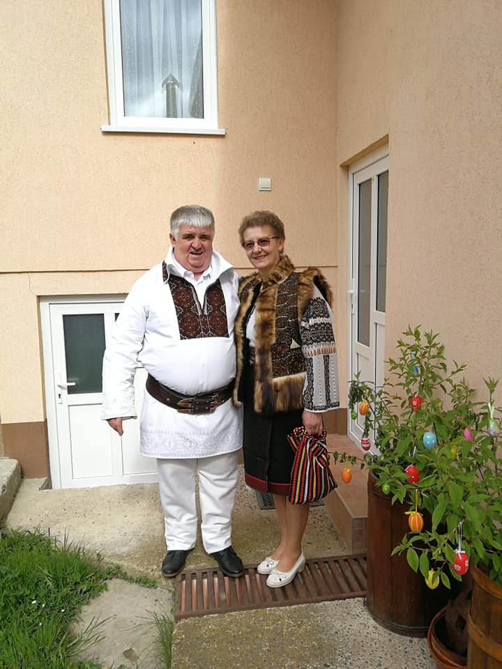
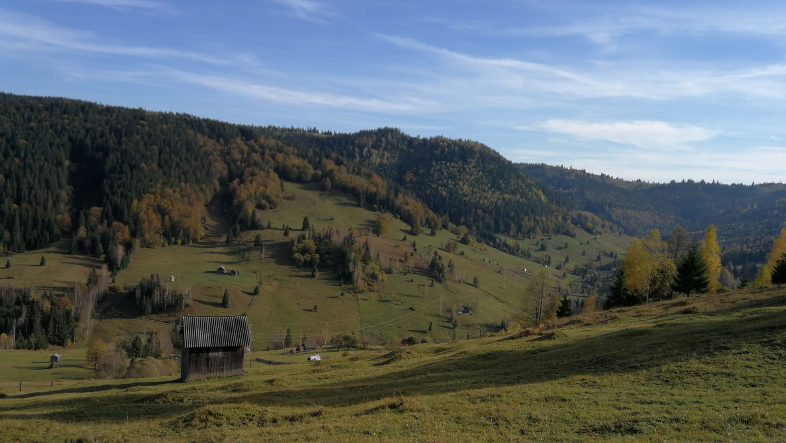
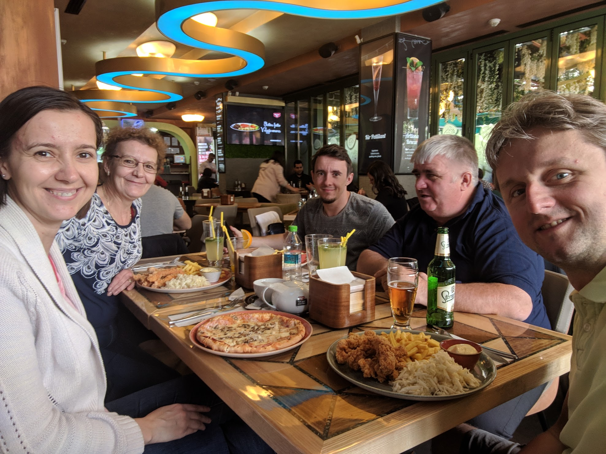
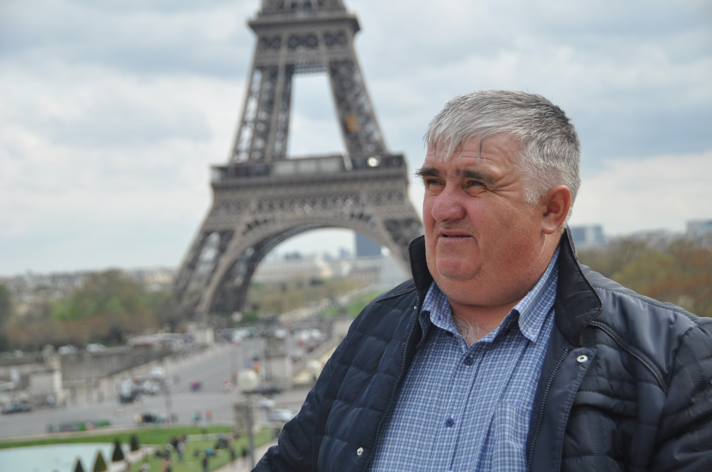

Mereu ascult cu placere muzica populara
Sa traiasca Plaiesii, sunt fanul numarul 1!

Port cu mandrie portul nostru traditional
... cat ma mai incape

Dragi imi sunt muntii nostri mereu verzi
Noroc cu Vitara, ca altfel ramaneam cu privitul de departe.

O masa buna alaturi de cei dragi e mereu un prilej de voie buna
Va recomand cu mare drag restaurantul Mamma Mia din Iasi, nici nu vreau sa merg in alta parte!

E frumoasa Bucovina, dar imi place sa descopar si lumea
Hai ca am vazut si Parisul, ce mai e frumos in lumea asta?
